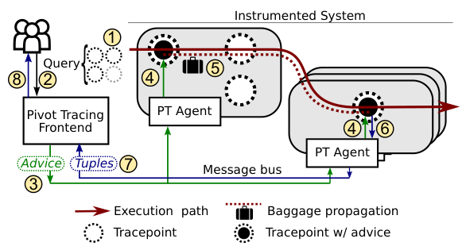
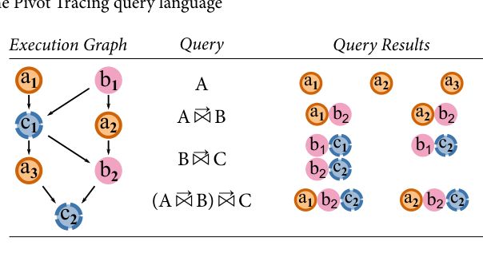
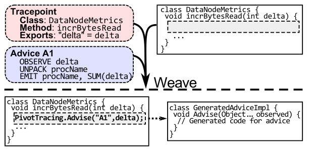
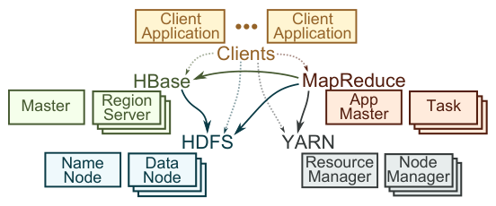
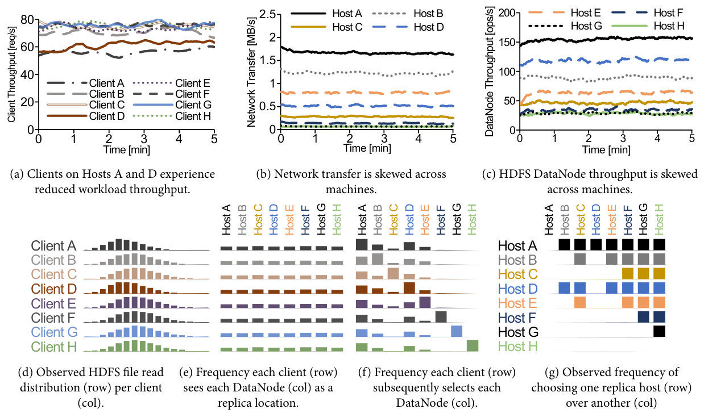
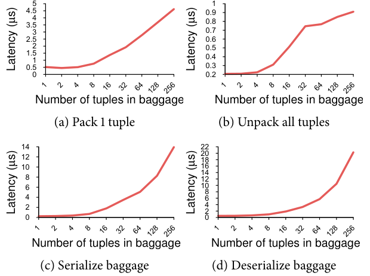
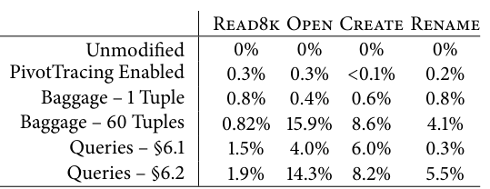

Pivot Tracing: Dynamic Causal Monitoring for Distributed Systems
This page was written by an AI model to give a high-level overview of the paper. Please check the paper for detail: ACM Digital Library.
Troubleshooting a distributed system usually means reading whatever logs and counters the developers decided, ahead of time, were worth recording. Two problems follow from this. First, what gets recorded is fixed a priori: if the metric a user needs was not anticipated, they must file a feature request and wait, or instrument the code themselves and redeploy. Second, what gets recorded is scoped to one component or one machine: HDFS (Hadoop Distributed File System) sums disk bytes per DataNode, HBase counts operations per second, and MapReduce counts total HDFS bytes for a job, but none of them can tell a user how many of a DataNode's disk bytes were caused by one particular HBase table scan running on a different machine.
Dynamic instrumentation frameworks such as DTrace and Fay already solve the first problem: they let an operator choose, at runtime, which of many latent tracepoints to turn on. But they do not solve the second. DTrace cannot share information between probes in different operating system instances, and Fay cannot share information between probes in different address spaces, because neither framework has a way to carry state across those boundaries. End-to-end tracing systems such as Dapper and X-Trace do cross those boundaries, by propagating an identifier with each request, but they are built to record whole traces for later, offline reconstruction and analysis, not to answer an arbitrary live query defined at one point of the system using data captured at another.
Pivot Tracing's idea is to fuse the two techniques through one new relational operator: the happened-before join (written →⋈). A query can take a metric exposed at one tracepoint and group, filter, or restrict it using any variable exposed by any other tracepoint that causally preceded it in the same request's execution, anywhere in the distributed system, without the two tracepoints' code having any built-in relationship. Pivot Tracing's running example: a DataNode-level disk metric that was never broken down by client is instantly regrouped by client process name, HBase table, or MapReduce job, without redeploying HDFS.
Mechanically, operators define tracepoints (places dynamic instrumentation can attach, exporting named variables); users write LINQ-like queries over the tuples tracepoints would produce; the query compiler turns a query into small, side-effect-bounded programs called advice; and advice is woven into the running system's bytecode. The crucial piece is baggage, a per-request container that advice packs tuples into and that is explicitly propagated by the host systems across thread, process, and RPC boundaries, so that advice running later in the same request's execution can unpack what earlier advice packed. Because the join is evaluated inline, as the request actually executes, Pivot Tracing avoids ever assembling a global trace graph to evaluate the join.
The authors built a Java prototype and instrumented HDFS, HBase, Hadoop MapReduce, and YARN (Yet Another Resource Negotiator) with 50 to 200 lines of one-time boundary-propagation code per system. On an 8-node cluster they used it to find a real, previously unreported load-imbalance bug in HDFS's replica selection logic (later confirmed and fixed upstream as HDFS-6268) and to reproduce three previously-published root-cause diagnoses (a limping network cable, rogue garbage collection, and NameNode lock contention) using only a handful of queries each. Measured application-level overhead was at most 0.3% for the queries they ran, rising to a worst case of 15.9% only in an adversarial microbenchmark that forced 60 tuples into the baggage of a very short, CPU-bound request with no real query installed.

Key takeaways
- The happened-before join (→⋈) lets a query group, filter, or select a metric at one tracepoint using properties of events at another tracepoint that causally preceded it, even across process, machine, and application boundaries.
- This needs two mechanisms working together: dynamic instrumentation (tracepoints plus woven advice, installed and removed at runtime) and causal metadata propagation (baggage, carried per request).
- Queries compile to advice built from five primitives (Observe, Unpack, Filter, Pack, Emit); a query optimizer rewrites happened-before joins to push projection, selection, and aggregation as close as possible to the source tracepoint, which bounds how much data baggage has to carry.
- Implemented in Java via runtime bytecode rewriting, so inactive tracepoints cost nothing; baggage propagation across system boundaries required 50 to 200 lines of one-time manual code per Hadoop component, plus AspectJ-based automatic propagation across common Java interfaces (Thread, Runnable, Callable, Queue).
- On an 8-node Hadoop cluster, a small number of queries found a real replica-selection bug and reproduced three previously-reported diagnoses; measured application-level overhead was at most 0.3% for the paper's real queries and up to 15.9% only in an adversarial baggage-size microbenchmark.
From tracepoints to a live, cross-component join
Why logs and single-machine dynamic instrumentation fall short, the query language and happened-before join, how queries compile to advice, how baggage carries state, and how the Hadoop stack was instrumented.
1 · Why logs, metrics, and single-process tracing fall short
The paper's survey of Apache issue trackers finds a recurring pattern: users repeatedly request new metrics, new breakdowns of existing metrics, or changes to how metrics are aggregated, and many of these requests sit unresolved because of developer pushback or inertia. The root cause is structural, not a lack of effort: logging and metrics code is written ahead of time, as part of the development path, so the set of questions a system can answer is fixed before anyone knows what question an operator will actually need to ask. Even when a system does expose a relevant metric, it is almost always scoped to one component, for example a per-DataNode byte count, with no way to relate it to who or what outside HDFS caused it. Dynamic instrumentation frameworks such as DTrace and SystemTap remove the first limitation, since probes can be installed at runtime; Fay extends this to clusters. But none of these three can propagate state between a probe in one process and a probe in another, so they cannot answer a question that spans an RPC (remote procedure call) boundary, let alone a boundary between two different applications sharing a cluster.
2 · Tracepoints: where instrumentation can attach
A tracepoint names one or more locations in the running system's code, typically the entry, exit, or exceptional return of a method, or a specific line number, where Pivot Tracing can install instrumentation. A tracepoint is defined by someone with knowledge of the system (a developer or an expert operator) and exports a set of named variables that are visible to code run at that tracepoint; besides whatever the definer declares, every tracepoint also exports host, timestamp, process id, process name, and the tracepoint's own definition by default. Tracepoint definitions live outside the system's source code, so defining a new one does not require redeploying the system, and a tracepoint with no advice installed costs nothing to the host system (a "zero-probe effect").
3 · The query language and the happened-before relation
Users write queries in a LINQ-like syntax over the tuples that tracepoints would emit. The core relational operators are standard: union, selection (filtering), projection, grouping, and aggregation (Sum, Count, Max, Min, Average), plus temporal selectors that keep only the most or least recent one or N tuples (First, FirstN, MostRecent, MostRecentN).
| Operation | Description | Example |
|---|---|---|
| From | Use input tuples from a set of tracepoints | From e In RPCs |
| Union (∪) | Union events from multiple tracepoints | From e In DataRPCs, ControlRPCs |
| Selection (σ) | Filter only tuples that match a predicate | Where e.Size < 10 |
| Projection (Π) | Restrict tuples to a subset of fields | Select e.User, e.Host |
| Aggregation (A) | Aggregate tuples | Select SUM(e.Cost) |
| GroupBy (G) | Group tuples based on one or more fields | GroupBy e.User |
| GroupBy Aggregation (GA) | Aggregate tuples of a group | Select e.User, SUM(e.Cost) |
| Happened-before join (→⋈) | Join tuples from another query by causal precedence | Join d In Disk On d -> e |
| Happened-before join, restricted | Join only a subset of tuples from the other query | Join d In MostRecent(Disk) On d -> e |
The one operator none of these prior systems had is the happened-before join. For events a and b, write a ≺ b (Lamport's happened-before relation) if a causally preceded b within the execution of the same request. For two queries Q1 and Q2, the join Q1 →⋈ Q2 produces a joined tuple t1t2 for every pair where Q1 produced t1, Q2 produced t2, and t1 ≺ t2. Unlike a general equijoin, →⋈ does not need a key the two sides already share; precedence in a single request's execution is the join condition.

The figure above traces one execution that triggers tracepoints A, B, and C several times and shows the tuples several queries would produce: a plain query on A just returns A's own tuples; A →⋈ B pairs every A tuple with every B tuple that causally follows it in the same execution; chaining joins, (A →⋈ B) →⋈ C, extends the same logic transitively. This is exactly the mechanism behind the paper's motivating query, which joins a low-level HDFS byte-count tracepoint to the first client-protocol tracepoint any given request passed through, so that disk bytes can be grouped by which external application (HBase, MapReduce, or a raw HDFS client) caused them.
4 · Compiling a query to advice
A query is compiled into one piece of advice per tracepoint it touches. Advice is a small, restricted program with no jumps or recursion (so it always terminates) built from five primitives.
| Operation | Description |
|---|---|
| Observe | Construct a tuple from variables exported by a tracepoint |
| Unpack | Retrieve one or more tuples from prior advice |
| Filter | Evaluate a predicate on all tuples |
| Pack | Make tuples available for use by later advice |
| Emit | Output a tuple for global aggregation |
For the client-breakdown query in the idea section, two pieces of advice are generated: at the first client-protocol tracepoint reached by a request, advice A1 observes the client's process name and packs it into the baggage with a First semantics (ignoring the name on any subsequent client-protocol tracepoint for the same request); at the byte-count tracepoint, advice A2 observes the delta argument, unpacks the previously packed process name, and emits a joined (process name, delta) tuple, with Emit performing the Sum aggregation that the query's GroupBy-Aggregate asked for. A From clause becomes an Observe for the variables the query uses; each Join clause adds an Unpack for the joined query's variables and, recursively, a Pack at the end of the joined query's own advice; a Where clause becomes a Filter; and GroupBy/Aggregate/GroupByAggregate are implemented through Pack's and Emit's own grouping and aggregation arguments.
5 · Baggage: carrying query state along the execution
Pack and Unpack read and write a per-request container called baggage, which is propagated alongside the request as it crosses thread, process, and machine boundaries, explicitly capturing the happened-before relationship a join needs. Baggage generalizes the metadata-propagation idea from end-to-end tracing systems like X-Trace and Dapper, but here it is used to carry actual query state inline, during live execution, rather than just a trace identifier for later offline reconstruction.
| Method | Description |
|---|---|
| pack(q, t...) | Pack tuples into the baggage for a query |
| unpack(q) | Retrieve all tuples for a query |
| serialize() | Serialize the baggage to bytes |
| deserialize(b) | Set the baggage by deserializing from bytes |
| split() | Split the baggage for a branching execution |
| join(b1, b2) | Merge baggage from two joining executions |
An empty baggage serializes to 0 bytes, and deserialization only happens when an application actually tries to pack or unpack, so processes that are not participating in any active query pay close to nothing for propagating an empty container through them. Tuples in baggage are tagged with the unique id of the query they belong to, so several queries can run at once without interfering.
6 · Branches and merges: interval tree clocks
A request's execution can fork (across a thread pool, an async callback, or a fan-out RPC) and later rejoin, and Pivot Tracing must prevent a tuple packed on one branch from being visible to a sibling branch before the branches reconverge, or the happened-before relation would be violated. The prototype versions baggage using interval tree clocks: each branch gets a half of a globally unique interval id, and whichever instance holds that id is the only one a branch's Pack and Unpack see. When branches rejoin, their tuples are merged, duplicates are discarded, and a fresh id is assigned to the merged baggage, covering the full range the branches split from.
7 · Making the join cheap: inline evaluation and query rewrites
A naive implementation of →⋈ would collect all tuples from both sides centrally, across the whole cluster, before joining them, the same strategy a general equijoin or Magpie's temporal joins use; this does not scale to always-on, cluster-wide monitoring. Pivot Tracing instead evaluates →⋈ inline, during request execution, using exactly the Pack/Unpack mechanism above, so no global collection step is needed before the join can be evaluated. On top of this, the optimizer rewrites a query to push projection, selection, and aggregation as close as possible to the source tracepoint on each side of a join, which shrinks the number of tuples that must actually travel in the baggage from one side of a join to the other.
| Query | Optimized query |
|---|---|
| Πp,q(P →⋈ Q) | Πp(P) →⋈ Πq(Q) |
| σp(P →⋈ Q) | σp(P) →⋈ Q |
| σq(P →⋈ Q) | P →⋈ σq(Q) |
| Ap(P →⋈ Q) | Combinep(Ap(P) →⋈ Q) |
| GAp(P →⋈ Q) | GpCombinep(GAp(P) →⋈ Q) |
| GAq(P →⋈ Q) | GqCombinep(P →⋈ GAq(Q)) |
| GpAq(P →⋈ Q) | GpCombineq(Πp(P) →⋈ Aq(Q)) |
| GqAp(P →⋈ Q) | GqCombinep(Ap(P) →⋈ Πq(Q)) |
Here Combine refers to an aggregator's combiner function (for example, Count combines with Sum). Separately, Pivot Tracing performs process-level intermediate aggregation of emitted tuples before they are streamed off-box: this alone reduced the running example's traffic from about 600 tuples per second to 6 tuples per second per DataNode. Pivot Tracing does not bound the number of tuples a query could pack in the worst case, but the paper notes that in practice its aggregation operators (Sum, First, MostRecent, and their N-variants) keep baggage small; where this fails, falling back to emitting tuples globally and propagating only a small causality token, as X-Trace or Dapper do, is proposed as an alternative query plan. Measured results for these mechanisms are discussed in the Evaluation tab.
8 · Weaving advice and running the agent

Weaving has three steps: load code implementing the advice's operations, configure the target tracepoint to invoke that code and pass it the tracepoint's exported variables, and activate the tracepoint at every matching location in the system. The Java prototype does this at runtime using java.lang.instrument and the Javassist bytecode-manipulation library to rewrite and reload class bytecode from inside the running process; tracepoint matching supports patterns similar to AspectJ pointcuts, for example all methods of an interface on a class. Reloading a woven class costs about 100 ms once, and running continuously in Java's debugging mode (required for class hot-swapping) showed only small measured overhead in the authors' throughput experiments. A Pivot Tracing agent thread runs in every instrumented process, accumulates and partially aggregates the tuples emitted by local advice, and by default publishes partial results to a central message bus once per second.
9 · Putting it on the Hadoop stack

The prototype was applied to four widely used, independently developed systems: HDFS (DataNodes storing replicated blocks, a NameNode managing metadata), HBase (a Bigtable-like database with a Master and RegionServers, running on top of HDFS), Hadoop MapReduce (ApplicationMaster plus Map/Reduce task containers), and YARN (a cluster-wide ResourceManager plus per-machine NodeManagers). Because the prototype stores baggage in a thread-local variable, the only mandatory changes were to set and clear baggage at execution boundaries and to carry it across those boundaries: RPC protocol definitions were manually extended to carry baggage, and AspectJ instrumentation was added once to automatically propagate baggage across common Java concurrency interfaces (Thread, Runnable, Callable, Queue). Each system needed only 50 to 200 lines of manual modification; after that one-time change, arbitrary new Pivot Tracing queries, including ones that cross HDFS, HBase, MapReduce, and YARN boundaries, required no further code changes. Results from running these queries are covered in the Evaluation tab.
Evaluation
A case study that found a real HDFS bug, a case study diagnosing a limping network link, and overhead microbenchmarks and application-level benchmarks.
The evaluation runs on a cluster of 8 machines (8 cores, 16 GB RAM, 1 Gbit network interface card each) running HDFS, HBase, Hadoop MapReduce, and YARN, with workloads including a custom closed-loop StressTest client, an HBase workload from prior published work, and (for overhead measurements) HiBench, YCSB, and HDFS DFSIO/NNBench-derived requests. The paper also reports that an initial run of the instrumented systems on a 200-node cluster with constant-size baggage showed negligible performance impact, without giving detailed numbers.
| What | Value in the paper |
|---|---|
| Platform | 8-node cluster: 8 DataNodes, 1 NameNode, each with 8 cores, 16 GB RAM, 1 Gbit NIC; a separate 200-node run is mentioned but not detailed |
| Workloads | StressTest closed-loop reads; an HBase workload exhibiting end-to-end latency spikes; HiBench, YCSB, and HDFS NNBench-derived requests (Read8k, Open, Create, Rename) |
| Baselines | Unmodified HDFS/HBase/MapReduce/YARN, and HDFS with Pivot Tracing enabled but with varying amounts of baggage and advice installed |
| Metrics | Per-DataNode and per-client request throughput; network throughput per machine; per-component request latency; baggage pack/unpack/serialize/deserialize latency (µs); end-to-end request latency overhead (%) |
A chain of Pivot Tracing queries traces an HDFS throughput imbalance to a real replica-selection bug

What it shows. Starting from an observation that stress-test clients on two of eight hosts had consistently lower throughput, the authors ran a sequence of queries (Q3 to Q7) that each rule out one explanation. Q3 shows DataNode request throughput is skewed across hosts (one host averaging 150 ops/sec against another's 25 ops/sec); a happened-before join (Q4) of file-read requests to the client that issued them shows clients are in fact reading files uniformly at random; a join of requested files to their replica locations (Q5) shows replicas are themselves distributed near-uniformly across DataNodes; a join of which DataNode a client actually read from, to the client (Q6), shows clients consistently favor certain DataNodes beyond what local-replica preference explains; and a final join (Q7) correlating selected DataNode with the other replica locations for the same block shows a fixed, deterministic preference order among hosts.
What to take from it. The deterministic preference order was not explainable by configuration or data placement, which pointed the authors to the client and NameNode replica-selection code; they found that HDFS clients do not randomly choose among same-distance replicas, and the NameNode does not randomize rack-local replicas it returns, so load piles onto whichever host happens to sort first. This had been independently reported and fixed upstream as HDFS-6268. The case study used only two or three tracepoints total (DataNode RPCs, NameNode block-location lookups, and the stress-test client) but required chaining several happened-before joins to localize the cause.
Per-component latency decomposition identifies a downgraded network link as the cause of HBase latency spikes
What it shows. For an HBase workload experiencing occasional end-to-end latency spikes (observed request latency over a 5-minute window, with episodic spikes up to roughly 15 seconds), queries decomposed each request's time into components (RegionServer queueing, RegionServer processing, DataNode transfer, DataNode blocked time, DataNode garbage collection), comparing the average breakdown against the breakdown for only the slow requests (end-to-end latency over 30 seconds). A further query measured per-machine network transmit throughput over the same window.
What to take from it. Slow requests spent disproportionate time blocked on the network specifically at the HDFS DataNode on one host, and the per-machine network throughput query showed that host's transmit throughput capped far below the others. The cause was a faulty network cable that had downgraded that host's link from 1 Gbit to 100 Mbit, a case of "limping hardware" that silently degrades rather than failing outright. The same latency-decomposition technique was also used, without new tracepoints beyond what was already defined, to reproduce two previously published diagnoses: rogue garbage collection in HBase RegionServers, and NameNode overload from exclusive write locking.
Packing, unpacking, and (de)serializing baggage cost single-digit to low-double-digit microseconds and scale with tuple count

What it shows. Four microbenchmarks measure the latency of packing 1 tuple, unpacking all tuples, serializing, and deserializing baggage, as a function of the number of randomly generated 8-byte tuples already in the baggage (1 to 256). Pack-1-tuple latency rises roughly linearly from under 1 µs to about 4 to 5 µs at 256 tuples; unpack-all stays under about 1 µs across the range; serialize rises to roughly 12 to 14 µs at 256 tuples; deserialize rises to roughly 18 to 22 µs at 256 tuples.
What to take from it. Serialized baggage size, and the cost of operating on it, grow roughly linearly in the number of packed tuples, and the paper's own query optimizations (Section 4 of the paper, aggregation and the join rewrite rules) are what keep real queries near the low end of this range: of all the queries in the paper, the largest baggage (Q7, carrying a hostname and three replica locations) is about 4 tuples and 137 bytes per request. The benchmark establishes the per-tuple cost in isolation; it does not by itself say what total overhead a production query will see, which is measured separately in Result 4.
Application-level overhead is at most 0.3% for the paper's real queries, and single digits to 16% only under an adversarial, query-free baggage-size stress test

What it shows. On a CPU-bound HDFS stress test (Read8k, Open, Create, Rename requests), the table reports latency overhead relative to unmodified HDFS under five configurations: Pivot Tracing enabled with no baggage (0.3%, 0.3%, under 0.1%, 0.2% respectively); baggage carrying 1 tuple but no advice installed (0.8%, 0.4%, 0.6%, 0.8%); baggage carrying 60 tuples (about 1 KB) with no advice installed (0.82%, 15.9%, 8.6%, 4.1%); the real queries from the replica-selection case study installed (1.5%, 4.0%, 6.0%, 0.3%); and the real queries from the end-to-end latency case study installed (1.9%, 14.3%, 8.2%, 5.5%).
What to take from it. The overhead attributable to Pivot Tracing's infrastructure alone (debugging mode, baggage propagation plumbing, RPC serialization) is at most 0.3%. The largest overheads in the table, up to 15.9% on Open, come from the artificial 60-tuple baggage test with no actual query running, which the paper frames as a stress test on a short, single-lookup, CPU-bound operation rather than a realistic query cost; Rename shows near-zero overhead for the first case study's queries because none of those queries' advice is triggered by a Rename request, while it does show 5.5% overhead under the second case study's latency-tracking queries, which do instrument it. HiBench, YCSB, and DFSIO/NNBench benchmarks that bottleneck on network or disk showed no significant change, so these CPU-bound numbers represent the paper's worst case, not its typical case.
FAQ
Q·Where does the name "Pivot Tracing" come from?▾
From spreadsheet pivot tables and pivot charts, which let a user dynamically choose which values, functions, and grouping dimensions to view from an underlying dataset, and from data cubes in online analytical processing. Pivot Tracing applies the same idea to a live stream of distributed system events: the metric, the grouping dimension, and the filter can each be chosen, and changed, at query time.
Q·How is this different from DTrace or Fay?▾
DTrace and Fay already let an operator dynamically choose which tracepoints to activate, but neither can share information between probes that live in different scopes: DTrace is limited to a single operating system instance, and Fay is limited to a single address space. Pivot Tracing adds the baggage mechanism specifically so that information observed at one tracepoint can be used by advice at another tracepoint, even in a different process, machine, or application, as long as both are part of the same request's causal execution.
Q·How is this different from Dapper, X-Trace, or Zipkin style end-to-end tracing?▾
Those systems do propagate metadata across the same kinds of boundaries, and the paper credits them as an inspiration for baggage. But they are built to assemble a complete trace of a request for offline analysis. Pivot Tracing instead evaluates a specific, user-chosen join inline, as the request executes, and only ever materializes the tuples that query actually needs, rather than reconstructing a full execution graph.
Q·What exactly does the happened-before join compute?▾
For two queries P and Q, P →⋈ Q produces one output tuple for every pair (t1 from P, t2 from Q) such that t1 was produced before t2 in the execution of the same request, using Lamport's happened-before relation. It is not a general equijoin: there is no shared key to match on ahead of time, only causal precedence within one request's execution, and Pivot Tracing does not attempt to optimize more general equijoins.
Q·Does Pivot Tracing see every event in the system by default?▾
No. A tracepoint only runs instrumentation, and therefore only produces tuples, once a query's advice has been woven into it; an inactive tracepoint costs nothing and executions that never reach a woven tracepoint are completely unaffected. This is what the paper calls the "zero-probe effect."
Q·What is baggage, concretely, and how does it survive a network call?▾
Baggage is a per-request container of tuples, stored in a thread-local variable during execution. Pack and Unpack read and write it; serialize and deserialize convert it to and from bytes (lazily, using Protocol Buffers, so unmodified applications pay nothing); and split/join handle branching executions. Crossing a process or machine boundary, such as an RPC, requires the host system to explicitly carry the serialized baggage in its own protocol, which is why HDFS, HBase, MapReduce, and YARN each needed a small, one-time code change.
Q·What happens if a request's execution forks into parallel branches?▾
Pivot Tracing versions baggage with interval tree clocks so that a tuple packed on one branch is invisible to a sibling branch until they rejoin. Forking splits a branch's unique interval id into two non-overlapping halves, one per branch; rejoining merges the two branches' tuples (discarding duplicates) and assigns the merged baggage a new id covering the original range.
Q·How expensive is running a query?▾
The paper reports at most 0.3% application-level latency overhead from Pivot Tracing's infrastructure alone on a CPU-bound HDFS stress test, and higher but still modest overhead (up to 14.3%) when real queries from its case studies were installed on that same adversarial, short, single-lookup workload. Workloads that bottleneck on network or disk, such as HiBench and YCSB benchmarks, showed no significant change. Microbenchmarks separately show baggage pack/unpack/serialize/deserialize costs scale roughly linearly with the number of tuples carried, typically a few to around 20 microseconds at the sizes the paper's own queries produce.
Q·What changes did HDFS, HBase, MapReduce, and YARN need to make?▾
Each system needed 50 to 200 lines of one-time manual modification: setting and clearing baggage at request execution boundaries, and extending RPC protocol definitions to carry serialized baggage across the network. AspectJ instrumentation handled baggage propagation automatically across common Java concurrency interfaces (Thread, Runnable, Callable, Queue) without per-system code. After this one-time change, new Pivot Tracing queries, including ones spanning multiple of these systems, required no further modification to any of them.
Q·Is it dangerous to let users define arbitrary tracepoints and advice?▾
The paper acknowledges this is a real concern: because of how tracepoint-exported variables are currently defined, Pivot Tracing cannot guarantee that advice is entirely side-effect free, even though advice itself is restricted to a small instruction set with no jumps or recursion. The authors suggest restricting tracepoint definition to trusted administrators and requiring advice to be signed before installation, but state that a full security analysis, including sanitizing tracepoint code, is beyond the scope of the paper.
Q·Is dynamic instrumentation required to use Pivot Tracing?▾
No. The paper notes that a system could instead hard-code a fixed set of tracepoints ahead of time; the user would then be limited to those tracepoints, and adding new ones would go back to being tied to the system's normal development and release cycle, with inactive tracepoints costing at least a conditional check instead of Pivot Tracing's current zero cost. Baggage-based happened-before join can still work with such fixed tracepoints; what is lost is the ability to add new tracepoints without a rebuild.
Q·Does Pivot Tracing replace logging?▾
The paper is explicit that it does not. Logs still serve purposes Pivot Tracing is not designed for, such as security auditing, forensics, and general debugging. Pivot Tracing targets the specific gap where a user needs an ad hoc, cross-component metric at runtime that no existing log line or counter happens to expose.
Q·What did the case studies actually find?▾
A chain of happened-before join queries traced an HDFS cluster's skewed per-host throughput to a genuine bug in HDFS's replica-selection logic (clients did not randomize among equidistant replicas, and the NameNode did not randomize the rack-local replicas it returned), later confirmed and fixed upstream as HDFS-6268. Separately, per-component latency decomposition queries identified a faulty network cable that had silently downgraded one host's link from 1 Gbit to 100 Mbit as the cause of occasional HBase latency spikes, and the same decomposition technique reproduced two other previously published diagnoses (rogue garbage collection, and NameNode lock contention) without needing new tracepoints.